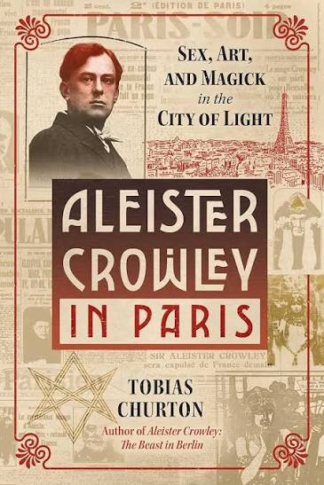
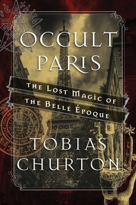
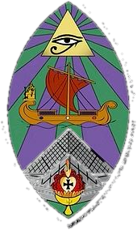

Thelemic MapParis
Les lieux de Crowley et le Paris occulte
Une carte interactive pour marcher dans le Paris de Thelema : les adresses d'Aleister Crowley entre 1900 et 1929, et celles des mages, libraires, poètes et musiciens ésotériques de la Belle Époque. Chaque lieu a son histoire, ce qu'il est devenu aujourd'hui et ses sources.


Les livres de Tobias Churton Horae 93
Horae 93

Oasis ParisiiComment utiliser la carte
En haut, passe de « Crowley à Paris » (1900-1929) au « Paris occulte » de la Belle Époque (1880-1914).
Les onglets au-dessus de la carte tracent un quartier : Golden Dawn, Montparnasse, Saint-Germain, Montmartre… La liste des lieux s'affiche à gauche.
La barre de chronologie en bas allume les lieux année après année, avec l'événement du moment.
À droite, touche Mathers, Rose Kelly, Papus ou Satie : leur fiche s'ouvre et leurs lieux s'illuminent sur la carte.
31 lieux et huit parcours : la Golden Dawn de Paris, Montparnasse, Saint-Germain, la rive droite, Montmartre et Pigalle, l'expulsion de 1929, les fêtes et les mémoires.
Ouvrir la carte → 1880-1914Paris occulte30 lieux du Paris ésotérique de la Belle Époque : la librairie d'Edmond Bailly, les Salons de la Rose+Croix, Guaita, Papus, Péladan, Satie et le Chat Noir, l'Église gnostique.
Ouvrir la carte →Les sources
Thelemic Map n'est lié à aucun ordre ni à aucune organisation, et ne parle au nom de personne. Il donne des pistes, des adresses et des sources : à chacun de les suivre. La plupart des lieux sont privés et se regardent depuis la rue.
Fais ce que voudras sera toute la Loi.